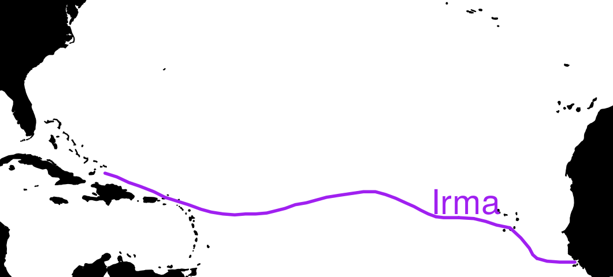

So many hurricanes
Visualizing storm data in R

100 years of hurricanes in 100 lines of code
NOAA keeps some pretty detailed data on storms, dating all the way back to the 19th century. In light of all the recent hurricane talk, we decided to have a look at it.
Get the data
Here, we attach a few packages and read in some data (downloaded from the links in-code).Process the data
The dplyr package goes along way in making the data ready for visualization.Visualize the data
A few lines more, and we get Irma's trajectory.Make an animation
With a bit of creative file naming and loops, we get a sequential set of pngs, ready to be combined into an animation.Enjoy the result
Here it is. 100 years of hurricanes, in one gif, generated with only (about) 100 lines of code.
Here's all the code for the production of these maps. Enjoy!